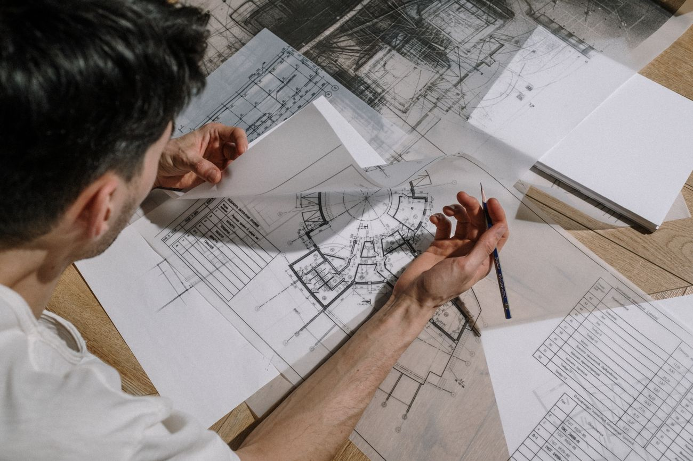
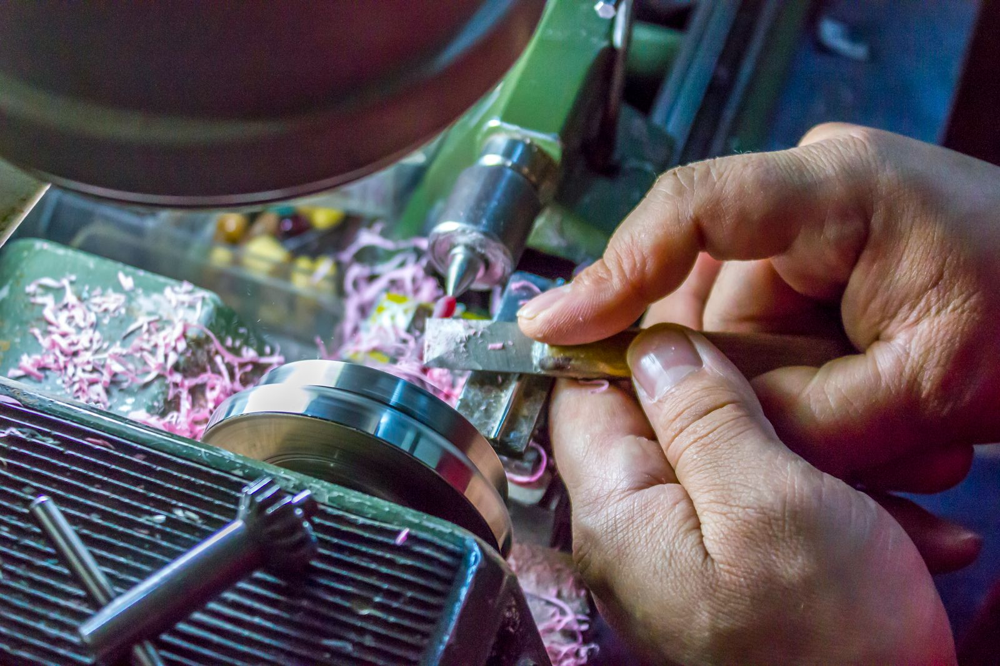
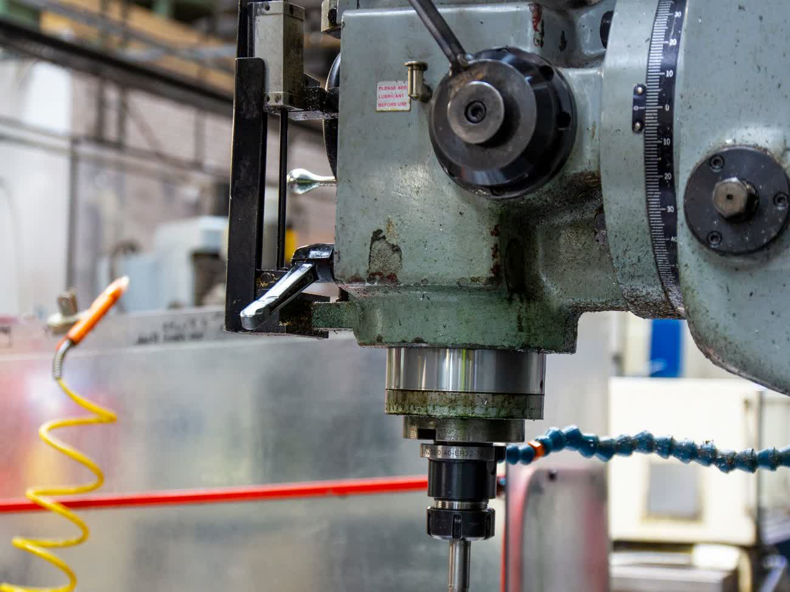
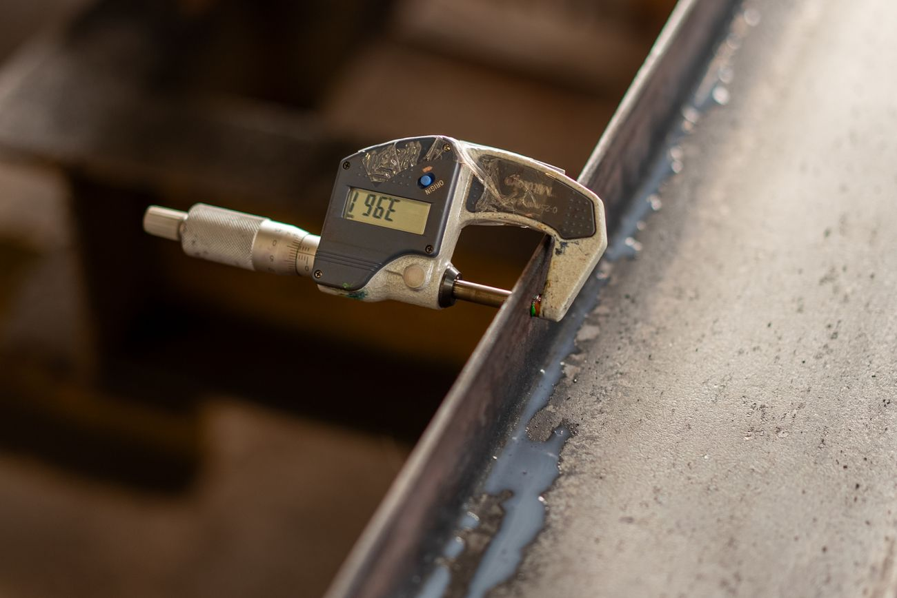
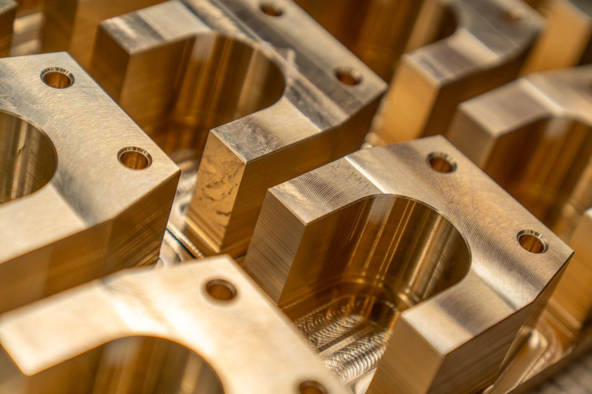
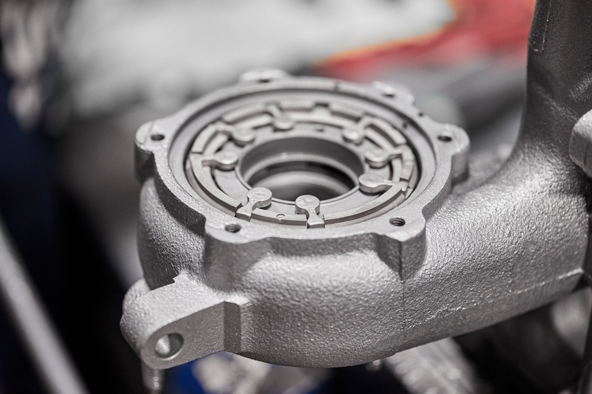
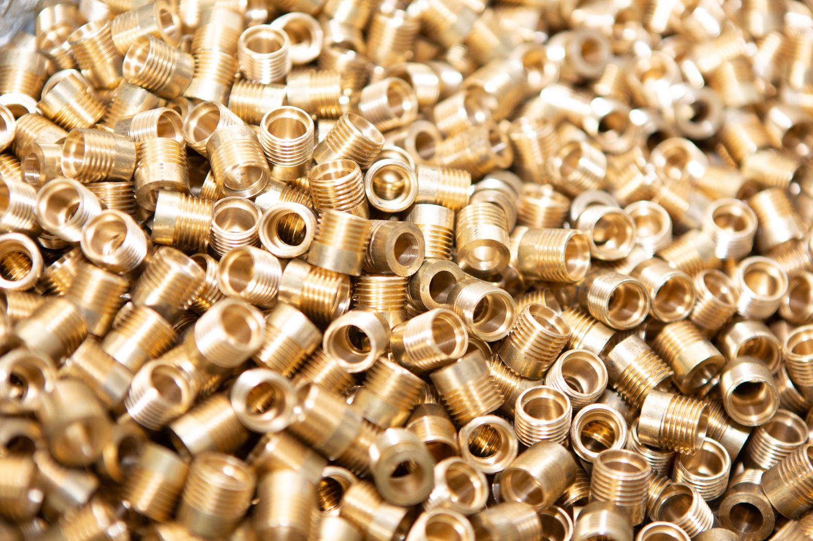
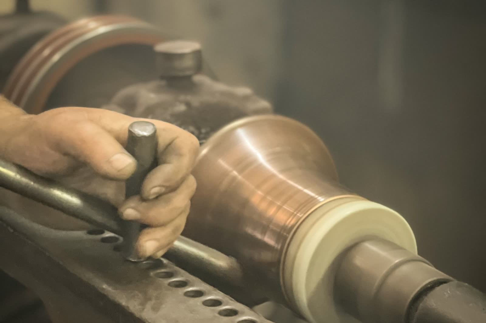

01
まずは、お話を伺います。
試作一つからでも構いません。 図面が完成していない段階でも、 一緒に整理するところから始めます。


最後の数ミクロンは、
人の感覚が決めます。
半世紀以上にわたり日本のものづくりを 支えてきた職人技と、 現代の高速自動NC機。
その両方を使い分けながら、 図面の向こう側にある課題まで考え、 設計者の不安を少しでも減らすこと。
私たちは、 そのための技術者集団でありたいと 考えています。
隙間ばめ、中間ばめ、締まりばめ。 図面通りの数値でも、材質や温度によって 嵌め心地は変わります。 相手のシャフトやブシュを手元に置き、 手動旋盤や中グリバイト、リーマを使って コンマ数ミクロン単位で仕上げる。 職人の感覚が、「吸い付くようなはめ合い」を 実現します。
豊富な汎用機を活かし、 プログラミングや治具の準備を待たずに その場で加工に着手します。 急な設計変更、飛び込みの試作依頼。 大量生産の工場が苦手とする仕事こそ、 私たちの出番です。
機械で削った直後の表面に残る 削り跡（ツールマーク）を、 職人が手作業で丁寧に取り除きます。 ヘアラインの方向を揃え、微細なバリを落とし、 外観部品の高級感や、シール面の気密性まで 格段に高めます。
信頼できる近隣の町工場ネットワークと連携し、 メッキ・塗装・半田付け・ろう付け・プレスまで 当社が一括して手配・管理します。 バラバラに発注・納期管理する手間をなくし、 表面処理まで済んだ状態でお届けします。
一つひとつの工程を、 設計者の安心につながる時間として 大切にしています。
試作一つからでも構いません。 図面が完成していない段階でも、 一緒に整理するところから始めます。

材質や形状だけでなく、 加工性や測定方法まで考慮しながら 最適な方法をご提案します。

数値だけでは判断できない部分まで、 長年の経験をもとに確認します。

最後まで責任を持って仕上げ、 次の開発へ安心して進める部品を お届けします。

自社の超精密切削加工を軸に、 二次加工・表面処理までを一括でお引き受けする 「ワンストップ加工サービス」です。
銅、真鍮（黄銅）、アルミ。 デリケートな非鉄金属を、 ミクロン単位で削り出します。
精密旋盤加工、汎用旋盤加工、フライス加工、 マシニング加工（穴あけ・ザグリ・ネジ切り）、 リーマ加工、切断加工。
鉄、ステンレス、砲金、各種樹脂は、 信頼できるパートナー企業と 連携して対応します。
メッキ（表面処理）、塗装、半田付け、 ろう付け、プレス成形まで、 当社が一括して手配・管理します。
日本の産業を支えてきた最高峰の汎用機と、 高速自動NC機が役割を分担することで、 柔軟性と高精度を両立しています。
一つひとつ異なる課題と向き合い、 丁寧に仕上げてきた加工事例です。



試作一つからでも、 図面が固まっていない段階でも構いません。
内容を拝見し、 二営業日以内にご連絡いたします。